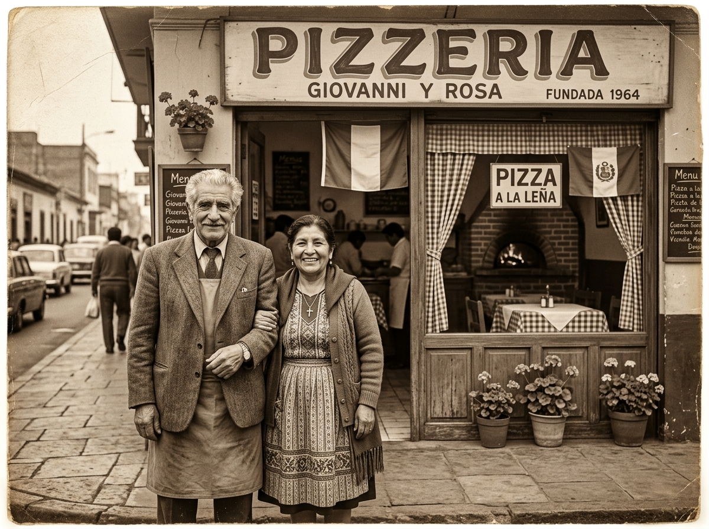
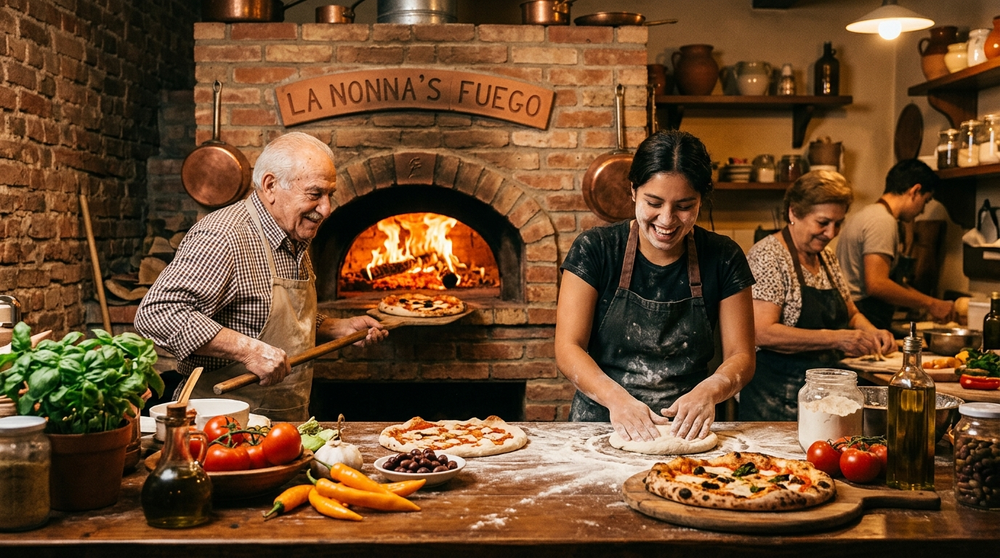

Desde Nápoles hasta Lima
Nuestra Historia
Más de 60 años de tradición pizzera, donde el sabor de Italia
se fusiona con el alma del Perú.

Nápoles — Lima, 1964Donde Italia encontró al Perú
Todo comenzó en 1962, cuando Giovanni Ferretti, un joven pizzaiolo nacido en el barrio de Spaccanapoli, Nápoles, emprendió un viaje que cambiaría su destino. Con apenas una maleta, su receta de masa madre heredada de su nonna Carmela y un sueño incontenible, Giovanni cruzó el océano hasta llegar a Lima.
En el bullicioso mercado de Surquillo conoció a Rosa Quispe, una vibrante cocinera ayacuchana cuyas manos transformaban ingredientes humildes en platos extraordinarios. Rosa le enseñó los secretos del ají amarillo, la aceituna botija y la chicha morada. Giovanni le mostró el arte de la masa fermentada y la salsa pomodoro napolitana. Juntos descubrieron que sus culturas, aparentemente lejanas, compartían un mismo idioma: el amor por la buena mesa.
"La mejor pizza no nace solo de una buena receta, nace del corazón de quien la prepara. Cada horno es un altar, cada masa un lienzo, cada ingrediente una historia que merece ser contada."— Giovanni Ferretti, fundador, 1964

El horno original, restauradoEl nacimiento de una leyenda
En 1964, Giovanni y Rosa abrieron un pequeño local en una esquina del Jirón de la Unión, con apenas cuatro mesas y un horno de barro construido por el propio Giovanni con ladrillos traídos de Lurín. Así nació la primera pizzería Ferretti-Quispe, donde la pizza a la leña napolitana se servía junto a chicha morada casera.
La fusión fue revolucionaria: la Pizza Lomo Saltado — con tiras de lomo al wok, cebolla morada y un toque de sillao — se convirtió en un fenómeno que atrajo desde estudiantes universitarios hasta embajadores. La Pizza Ají de Gallina conquistaba paladares que jamás imaginaron esa combinación.
Décadas después, su nieto Mateo Ferretti Quispe — a quien cariñosamente llaman "Doky" — decidió honrar el legado de sus abuelos reinventando la marca. En 2022, nació Little Doky's Hub: un concepto moderno que respeta cada gramo de tradición familiar, desde la masa madre de 72 horas hasta la selección artesanal de ingredientes peruanos e italianos.
Nuestra Línea del Tiempo
Los momentos que definieron quiénes somos hoy.
1962
Giovanni llega al Perú
Con su receta de masa madre napolitana, Giovanni Ferretti desembarca en el Callao con el sueño de compartir el sabor de Italia.
1963
El encuentro con Rosa
En el mercado de Surquillo, Giovanni conoce a Rosa Quispe. De ese encuentro nace no solo un amor, sino una revolución culinaria.
1964
Primera pizzería abierta
Abren su primer local en el Jirón de la Unión con 4 mesas, un horno de barro artesanal y una carta que fusionaba dos mundos.
1978
La Pizza Lomo Saltado
Rosa crea la legendaria Pizza Lomo Saltado, que se convierte en el plato más pedido del local.
1995
Segunda generación
Marco Ferretti Quispe, hijo de Giovanni y Rosa, asume la cocina. Introduce las pizzas gourmet manteniendo la esencia familiar.
2022
Nace Little Doky's Hub
Mateo "Doky" Ferretti Quispe, nieto de los fundadores, reinventa la marca con un concepto moderno.
Lo Que Nos Define
Tradición Familiar
Cada receta cuenta una historia de tres generaciones.
Ingredientes Frescos
Seleccionamos a mano cada ingrediente del mercado local.
Horno de Leña
Cocción artesanal que realza el sabor natural de la masa.
Fusión Cultural
El encuentro de dos cocinas milenarias: Italia y Perú.
Encuéntranos
Visítanos en nuestro local de Miraflores y vive la experiencia Doky.
Dirección
Calle Schell 245, Miraflores
Lima, Perú 15074
Horario de Atención
Lunes a Jueves: 12:00 – 22:00
Viernes a Domingo: 12:00 – 23:30
Teléfono & WhatsApp
(01) 445-2871
+51 987 654 321
Zona de Delivery
Miraflores, San Isidro, Barranco,
Surquillo y Surco (radio 5 km)
¿Listo para probar nuestra historia?
Cada pizza que sale de nuestro horno lleva más de 60 años de tradición. Ordena ahora y sé parte de la familia Doky.